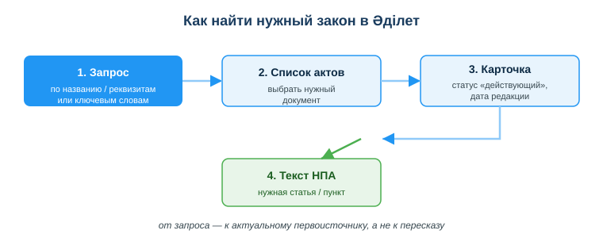
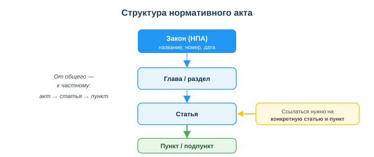

Справочно-правовые системы (Әділет)
Практическая ситуация
«А это вообще законно?» — вопрос, который у разработчика возникает постоянно: можно ли так обрабатывать персональные данные клиентов, нужна ли лицензия на продукт, как корректно оформить договор с заказчиком. Ответ всегда один: он записан в законах. А быстро найти нужный закон помогают справочно-правовые системы.
В команде ты слышишь: «вроде бы хранить данные дольше года нельзя». Кто-то прочитал это в чате, кто-то — в блоге 2014 года. Полагаться на пересказ опасно: закон мог измениться. Умение открыть официальный первоисточник и прочитать конкретную статью отличает профессионала от того, кто верит слухам.

Что ты научишься делать
- находить нормативные правовые акты РК в системе Әділет;
- проверять статус и актуальность редакции закона;
- читать структуру акта и переходить к нужной статье/пункту;
- ссылаться на конкретную норму, а не на пересказ.
Почему это важно
Право — это не «дело юристов». Любой цифровой продукт работает с данными, договорами и лицензиями, а значит подчиняется законам. Найти и прочитать первоисточник за минуту умеет тот, кто владеет справочно-правовой системой; остальные тратят часы или верят неточным пересказам.
Связь с профессией: разработчику регулярно нужно проверять правовые требования — к обработке персональных данных, к лицензиям на используемые библиотеки, к условиям договора с заказчиком. Ссылка на конкретную статью действующего закона делает твою позицию весомой в споре с заказчиком, коллегой или проверяющим.
Учимся читать схему
Посмотри на схему «Как найти нужный закон в Әділет» выше. Ответь на вопросы:
- с чего начинается поиск — с реквизитов акта или с готового текста статьи?
- что нужно проверить в карточке документа, прежде чем читать текст?
- почему итоговый блок (текст НПА) выделен зелёным, а не синим?
Главное понятие
Справочно-правовая система (СПС) — база нормативных правовых актов с поиском, актуальными редакциями и связями между документами.
В Казахстане главный официальный ресурс — Әділет (adilet.zan.kz): это государственная информационно-правовая система НПА. Есть и коммерческие системы (online.zakon.kz, Параграф) — с удобным поиском, комментариями и дополнительными сервисами. Для ссылки на официальную норму бери Әділет; коммерческие удобны для быстрой ориентировки.
Как искать в Әділет
- Открыть adilet.zan.kz.
- Искать по названию акта, его реквизитам (номер, дата) или ключевым словам.
- Проверить статус и редакцию: должно быть «действующий» и видна дата последней редакции.
- Перейти к нужной статье/пункту и прочитать формулировку.
Закон часто меняется. Всегда смотри актуальную редакцию и дату, а не первую попавшуюся версию.
Структура нормативного акта
Чтобы сослаться точно, надо понимать, как устроен акт. Он идёт от общего к частному: сам акт делится на главы/разделы, главы — на статьи, а статьи — на пункты и подпункты. Корректная ссылка указывает не «где-то в законе», а конкретную статью и пункт.

Например: «Закон РК «О персональных данных и их защите» (№ 94-V, 2013), статья 7, пункт 1» — это адрес нормы, по которому её найдёт любой.
Мини-кейс
Студент сослался на «закон о персональных данных» по статье из блога 2014 года. Но закон с тех пор редактировался. Следующий шаг: открыть Әділет, найти действующую редакцию, проверить статус и дату, перейти к нужной статье и сослаться на неё с указанием номера закона и даты.
Разбор типичной ошибки
Ошибка. Верить пересказу закона в чате или блоге и использовать старую редакцию как действующую.
Почему это ошибка. Пересказ может быть неточным, а норма с тех пор могла измениться или утратить силу. Решение, принятое по устаревшей версии, окажется неверным.
Как правильно. Читать первоисточник в официальной СПС (Әділет), проверять статус «действующий» и дату последней редакции, ссылаться на конкретную статью.
Практика
Ответь письменно:
- Опиши по шагам, как найти в Әділет действующую редакцию Закона РК «О персональных данных и их защите» и убедиться, что она актуальна.
- Перепиши ссылку «как-то в законе сказано про согласие» в корректную форму ссылки на НПА (название, реквизиты, статья).
Образец (часть ответа на пункт 1): «Открываю adilet.zan.kz, ищу по названию закона. В списке выбираю нужный акт, открываю карточку: проверяю статус "действующий" и дату последней редакции. Затем перехожу к статье о согласии и читаю формулировку».
Самопроверка
- Я умею найти нужный НПА в Әділет по названию или реквизитам.
- Я знаю, что проверять статус и дату редакции обязательно.
- Я могу сослаться на конкретную статью и пункт, а не на пересказ.
Подумай
- В каком рабочем споре с заказчиком тебе пригодится ссылка на конкретную статью действующего закона?
- Почему опасно полагаться на пересказ закона из чата, даже если его прислал опытный коллега?
Итог
Что теперь делать:
- для правовых вопросов используй официальную СПС — Әділет (adilet.zan.kz);
- ищи по названию, реквизитам или ключевым словам; проверяй статус и редакцию;
- понимай структуру акта: акт → глава → статья → пункт;
- ссылайся на конкретную статью с датой, а не на пересказ;
- помни: законы меняются — всегда бери актуальную версию.
Полезные ссылки
Источник: ГОСО ТиПО (приказ МП РК № 348); официальные ресурсы Әділет (adilet.zan.kz) и online.zakon.kz.
Материал разработан рабочей группой ТОО «Колледж Хекслет Казахстан» и одобрен к использованию в обучении решением Педагогического совета.